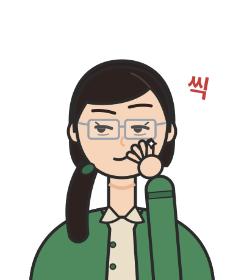

기억 용량: 패턴이 많으면 한꺼번에 무너진다
첫머리의 실험에서 저장하는 패턴을 늘리자 기억이 무너졌는데, 조금씩이 아니라 한꺼번에, 그것도 뉴런이 많을수록 더 갑자기 무너졌다. 결합에 새긴 골짜기는 왜 어느 순간 한꺼번에 사라질까?
패턴이 하나일 때와 여럿일 때
패턴이 하나뿐이면 모든 것이 앞의 스핀 100개로 돌아간다. 결합이 ξᵢξⱼ/N이므로 뉴런마다 부호를 ξᵢ만큼 바꾼 새 변수 ξᵢsᵢ로 적으면 모든 쌍에 1/N을 준 완전 연결 이징 모형이 되고, 새 변수의 자화가 바로 패턴과의 겹침이다. 그래서 온도가 있는 홉필드 네트워크는 β가 1을 넘을 때만 패턴을 기억하고, kT = 1/1.5에서 뉴런 100개의 겹침은 +0.88과 −0.88 두 곳에 몰린다. 스핀 100개를 두 무리로 나누던 전환이 곧 기억이 생기는 전환이고, 두 무리는 패턴과 그 반전이다. 패턴이 여러 개이면 다른 패턴들이 입력 합에 잡음을 보태는데, 뉴런 수에 대한 패턴 수의 비가 약 0.14를 넘으면 기억이 한꺼번에 사라진다는 것, 곧 기억 용량 (기억을 되살릴 수 있는 패턴 수의 한계, storage capacity)이 뉴런 수의 약 0.14배라는 것이 1985년 아미트, 구트프로인트, 솜폴린스키의 통계역학 계산으로 알려졌다. 기억 용량의 한계 자체가 또 하나의 상전이인 셈이다.
코드로 확인: 기억을 새기고 되살리기
이 장 첫머리의 실험과 용량 실험이다. 헤브 규칙으로 결합을 만들고, 온도 0에서 뉴런을 하나씩 입력 합의 부호로 맞추며 에너지를 기록한다. 뒷부분은 패턴 수를 늘려 가며 입력의 10%를 뒤집어 넣고, 복원된 결과가 원래 패턴과 얼마나 겹치는지를 잰다.
import numpy as np
rng = np.random.default_rng(0)
def store(xi):
"""헤브 규칙: 함께 켜지는 뉴런 쌍의 결합을 키운다. J = (1/N) Σ_μ ξ^μ ξ^μᵀ, 자기 결합은 0"""
J = xi.T @ xi / xi.shape[1]
np.fill_diagonal(J, 0)
return J
def recall(J, s, max_sweeps=50):
"""온도 0의 비동기 갱신: 한 번에 뉴런 하나를 입력 합의 부호로 맞춘다. 에너지 −½ sᵀJs를 기록"""
s = s.copy(); energies = [-0.5 * s @ J @ s]
for _ in range(max_sweeps):
changed = 0
for i in rng.permutation(len(s)):
new = 1 if J[i] @ s >= 0 else -1
changed += new != s[i]; s[i] = new
energies.append(-0.5 * s @ J @ s)
if changed == 0:
break
return s, energies
def corrupt(x, k):
y = x.copy(); y[rng.choice(len(x), k, replace=False)] *= -1
return y
N = 100
xi = rng.choice([-1, 1], size=(5, N)) # 패턴 5개
J = store(xi)
for name, start in [("패턴 0에서 30개를 뒤집은 입력", corrupt(xi[0], 30)),
("뒤집힌 패턴 −ξ⁰에서 30개를 뒤집은 입력", corrupt(-xi[0], 30))]:
s, E = recall(J, start)
print(f"{name}: 시작 겹침 {start @ xi[0] / N:+.2f} → 끝 겹침 {s @ xi[0] / N:+.2f}, "
f"에너지 {' → '.join(f'{e:.1f}' for e in E)}")
for N in (100, 1000): # 패턴 수를 늘리면: 입력은 10%를 뒤집어 넣는다
for ratio in (0.05, 0.10, 0.14, 0.20):
P = int(ratio * N); overlaps = []
for trial in range(30 if N == 100 else 10):
xi = rng.choice([-1, 1], size=(P, N)); J = store(xi)
for mu in range(min(P, 10)):
s, _ = recall(J, corrupt(xi[mu], N // 10))
overlaps.append(s @ xi[mu] / N)
print(f"N = {N:4d}, P/N = {ratio:.2f}: 평균 끝 겹침 {np.mean(overlaps):.3f}")
# 패턴 0에서 30개를 뒤집은 입력: 시작 겹침 +0.40 → 끝 겹침 +1.00, 에너지 -7.2 → -49.0 → -49.0
# 뒤집힌 패턴 −ξ⁰에서 30개를 뒤집은 입력: 시작 겹침 -0.40 → 끝 겹침 -1.00, 에너지 -8.1 → -45.8 → -49.0 → -49.0
# N = 100, P/N = 0.05: 평균 끝 겹침 1.000
# N = 100, P/N = 0.10: 평균 끝 겹침 0.996
# N = 100, P/N = 0.14: 평균 끝 겹침 0.955
# N = 100, P/N = 0.20: 평균 끝 겹침 0.784
# N = 1000, P/N = 0.05: 평균 끝 겹침 1.000
# N = 1000, P/N = 0.10: 평균 끝 겹침 0.997
# N = 1000, P/N = 0.14: 평균 끝 겹침 0.935
# N = 1000, P/N = 0.20: 평균 끝 겹침 0.342
에너지는 갱신할 때마다 줄기만 하고, 뒤집힌 패턴에서 출발하면 −ξ⁰로 모인다. 패턴 수가 뉴런 수의 0.10배일 때는 두 크기 모두 거의 완벽하게 복원하지만, 0.20배에서는 뉴런 1000개의 겹침이 0.342로 뉴런 100개의 0.784보다 오히려 크게 떨어진다. 네트워크가 클수록 무너짐이 날카로운 것은 스핀이 많을수록 상전이가 날카로웠던 것과 같은 이유다.
문제 5. 홉필드 네트워크의 용량
뉴런 1000개의 홉필드 네트워크에 무작위 패턴 P개를 헤브 규칙으로 저장한다. (가) 저장된 패턴 ξ¹에서 정확히 출발할 때 뉴런 i의 입력 합은 ξᵢ¹에 다른 패턴들에서 오는 잡음을 더한 것이고, 잡음의 표준편차는 약 √(P/N)이다. 한 번의 갱신에서 부호가 틀리는 뉴런의 비율을 P/N = 0.10, 0.14, 0.20에서 어림하라. (나) 실제로 패턴에서 출발해 끝까지 갱신하면 겹침은 얼마인가?

잡음을 정규분포로 치면, 부호가 틀릴 확률은 신호 1이 잡음 표준편차의 몇 배인지로 정해지니까 Φ(−√(N/P))예요. Φ는 표준정규분포의 누적확률이고요. P/N = 0.10이면 0.08%, 0.14면 0.38%, 0.20이면 1.27%요. 0.20에서도 1000개 중 13개만 틀리니까 겹침은 0.97쯤이겠네요. 기억이 무너진다는 건 좀 과장 아니에요?

한 번 갱신할 때 틀리는 비율을 실제로 재면 0.07%, 0.31%, 1.27%라서 네 어림이랑 거의 같아. 그런데 끝까지 돌리면 겹침이 0.998, 0.959, 0.402야. 0.20에서는 패턴에서 정확히 출발했는데도 0.4까지 떨어져.

뭐? 0.4? 13개만 틀렸는데?

13개가 틀리고 나면, 다음 갱신에서 다른 뉴런의 입력 합은 어떻게 되죠?

틀린 뉴런들이 이제 틀린 신호를 보내니까 신호가 1보다 작아지고, 같은 잡음에서도 틀리는 뉴런이 늘어나요. 늘어난 뉴런이 또 신호를 줄이고요. 한 번의 어림은 틀린 뉴런이 다른 뉴런에게 다시 영향을 준다는 걸 빼먹은 거예요.

그래서 용량은 잡음의 크기만으로 정해지지 않아요. 패턴이 적으면 틀린 뉴런이 몇 개 생겼다가 멈추지만, 어떤 비율을 넘으면 틀림이 틀림을 불러서 패턴 근처에 골짜기 자체가 남지 않아요. 아미트, 구트프로인트, 솜폴린스키가 계산한 그 경계가 약 0.14이고, 뉴런이 많을수록 경계가 날카로워지는 건 스핀이 많을수록 상전이가 날카로워진 것과 같은 이유예요.

조별 과제에서 한 명이 틀린 자료를 올리면 다른 사람이 그걸 보고 쓰고, 그걸 또 다음 사람이 인용하는 거랑 같네요. 틀린 사람이 몇 명을 넘으면 결국 보고서 전체가 틀린 쪽으로 기울고요.